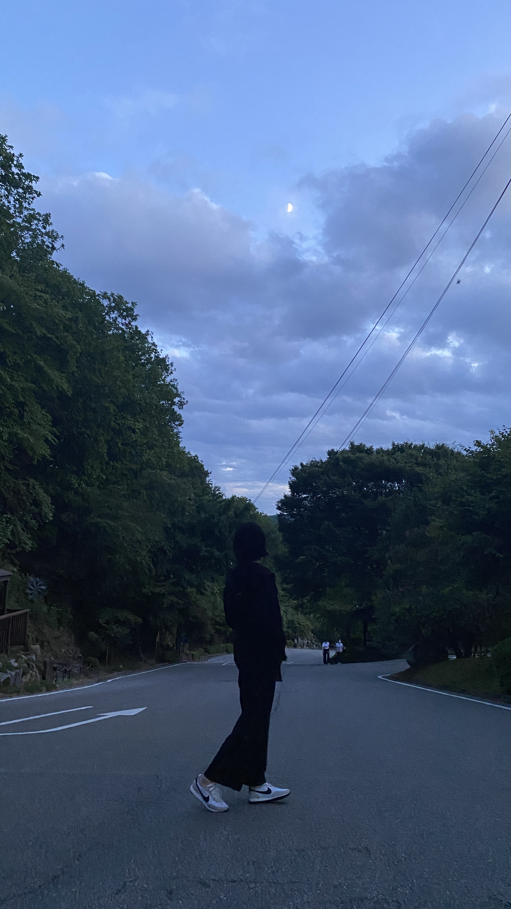

Youngseo Lee
Who am I
What I did
Contact

이영서 🌱
안녕하세요, 저는 프론트엔드 개발자를 꿈꾸는 이영서입니다.
이전 직장에서 사업 기획과 운영 업무를 담당 하던 중
성장
에 대해 깊이 있게 고민하게 됐어요. 그리고
"과연 이 직무로 개인의 성장을 이룰 수 있을까?"
스스로에게 질문을 던지게 됐죠..
그 고민의 결말은 저를
#개발자
의 길로 이끌었던 것 같습니다. 두렵고 설레이는 마음으로 새 출발을 시작하려고 합니다.
Let's start my journey as a web developer..